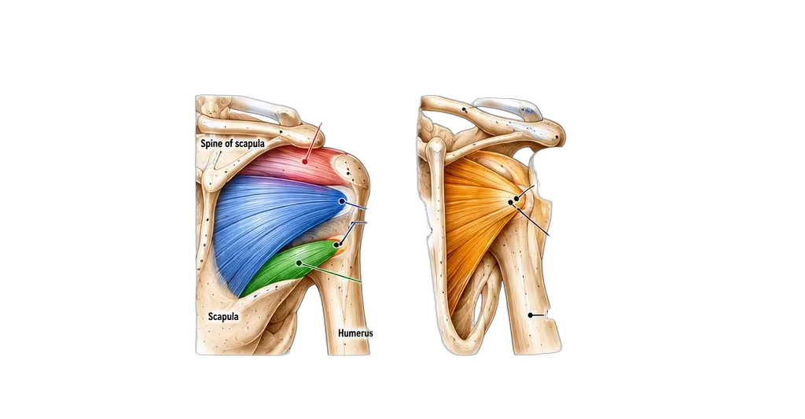

The Rotator Cuff
Anatomy · Attachments · Pain Patterns · Clinical Insights
Stable Shoulders. At Stronger You.
Anatomy · Attachments · Pain Patterns · Clinical Insights
Stable Shoulders. At Stronger You.
The rotator cuff consists of four muscles that stabilize the glenohumeral joint, center the humeral head, and control shoulder movement. Each muscle has a unique attachment and a distinct referred pain pattern.

| Muscle | Origin | Insertion | Function |
|---|---|---|---|
| Supraspinatus | Supraspinous fossa (scapula) | Greater tubercle (superior facet) | Initiates abduction (0–15°) |
| Infraspinatus | Infraspinous fossa (scapula) | Greater tubercle (middle facet) | External rotation |
| Teres Minor | Lateral border of scapula | Greater tubercle (inferior facet) | External rotation |
| Subscapularis | Subscapular fossa | Lesser tubercle (humerus) | Internal rotation |
| Muscle | Primary Pain Location | Arm Radiation | Key Movement Pain |
|---|---|---|---|
| Supraspinatus | Top of shoulder (acromion) | Lateral arm → thumb side | Abduction (0–15°) |
| Infraspinatus | Back of shoulder (below spine) | Posterior lateral arm → outside of hand | External rotation |
| Teres Minor | Lower posterior shoulder | Posterior lateral arm → outside of hand | External rotation |
| Subscapularis | Front of shoulder (anterior) | Medial arm → ring/pinky fingers | Internal rotation |